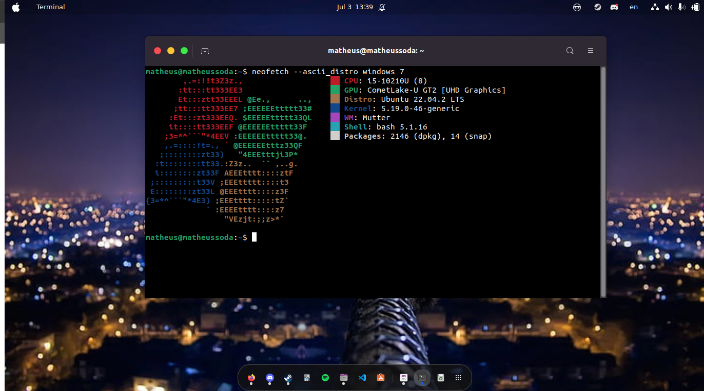
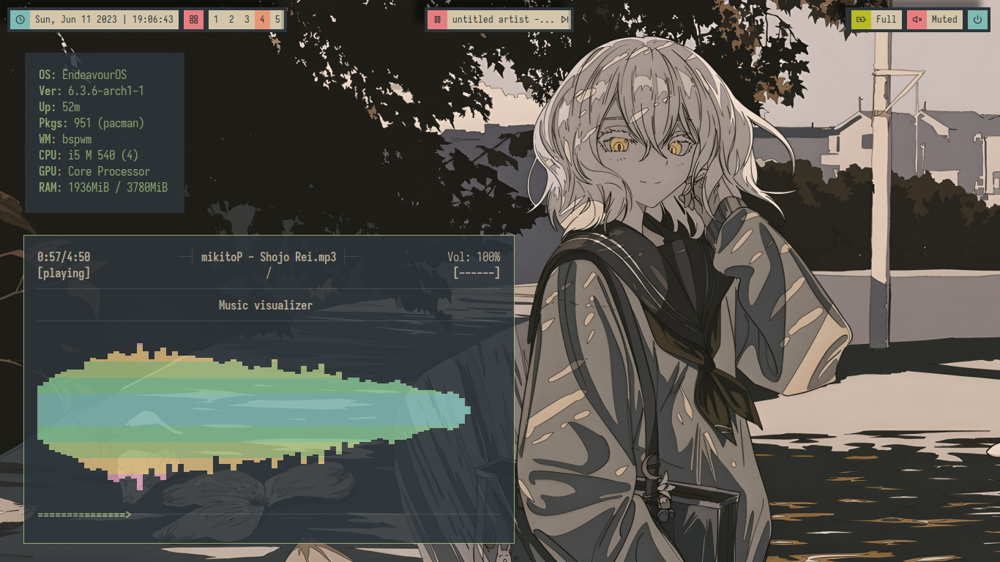
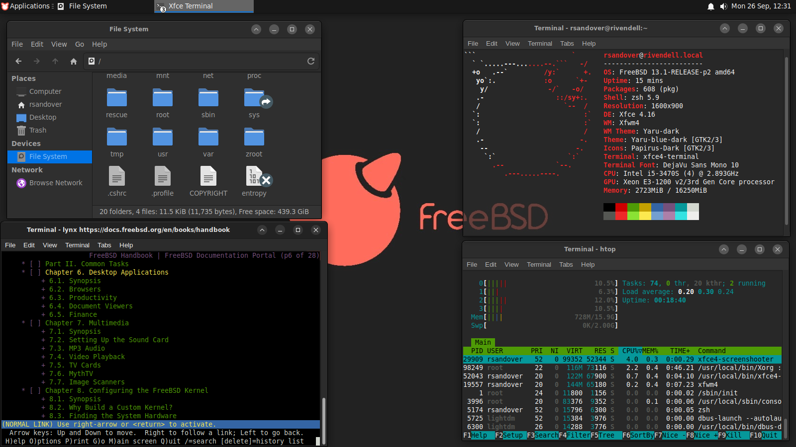

O Linux é uma família de sistemas operacionais de código aberto do tipo Unix baseados no kernel do Linux, um kernel de sistema operacional lançado pela primeira vez em 17 de setembro de 1991, por Linus Torvalds. De la para ca surgiram diversas distros linux das mais Simples
como o Ubuntu Mantido pela Canonical
Ate distros mais exoticas como o ue e mantida pela comunidade
Uma coisa muito marcante do linux e a "técnica" se e que podemos chamar isso assim chamada de ricing mas afinal de contas o que e "ricing" O termo ricing é usado para descrever o ato de modificar o comportamento e o design de algo de forma a torná-lo mais produtivo e mais agradável visualmente. Em sua concepção original, dizia respeito ao ato de tunar carros asiáticos importados afim de fazê-los parecer serem mais rápidos do que realmente eram. voce pode ler mais sobre essa tecnica em sub reddits na internet como o r/unixporn
Alguns claros exemplos de ricing
  Ambos tem uma processo de de instalaçao exotico sem o uso do Calamares ou outro instalador grafico ou seja: Tudo e feito via linha de comando
o Gentoo em especial e mais dificil de instalar ja que voce mesmo tem que compilar seu kernel. o que exige um conhecimento previo em partiçoes, compilaçao, e MUITA, MUITA calma e paciencia na hora de instalar e configurar um outro requesito importante porem nao obrigatorio para o uso do Gentoo e ter uma maquina mais potente do que a maioria. ja que a kernel e compilada inteira na sua maquina. esse e um dos maiores motivos de vermos o Gentoo com interfaces mais leves como o Xfce, Lxde, ou window managers como i3, sway, e bspwm. Em sua vez o Arch nao tem que fazer esse processo chato e ja e mais comum ver ele em interfaces mais pesadas como Gnome
Mas afinal de contas por que tantas pessoas usam o Arch e o Gentoo para o ricing, e bom existem alguns bons motivos para isso acontecer